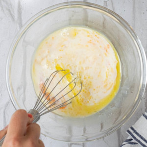
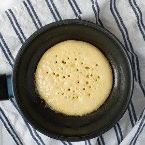
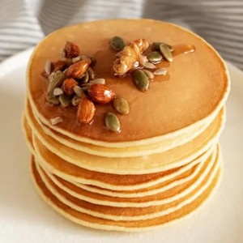

Ingredientes
- 1 taza de harina
- 1 cucharadita de polvo para hornear
- 3 cucharadas de azúcar
- 1 cucharada de aceite
- 1/2 taza de leche
- 1 huevo
Preparación
- Preparar la mezcla: En un bol, mezcla la harina leudante (o harina todo uso con polvo de hornear) y el azúcar. Agrega el aceite y la leche poco a poco, batiendo con un batidor de alambre para evitar grumos.
- Incorporar el huevo: Añade el huevo a la mezcla y bate hasta que esté todo integrado.
- Descansar la masa: Cubre el bol y deja reposar la mezcla en la heladera durante 5 a 10 minutos. Esto es clave para que la harina se hidrate y queden más esponjosos.
- Cocinar: Calienta una sartén antiadherente a fuego medio y engrásala con un poco de manteca o aceite. Vierte un cucharón de mezcla en el centro..
- Dar vuelta: Espera a que aparezcan burbujitas en la superficie del hotcake. Con una espátula, dale la vuelta con un golpe seco para que se cocine del otro lado por unos segundos.
- Servir: Retira de la sartén y disfruta acompañando con dulce de leche, miel o tu topping favorito.
Galería


